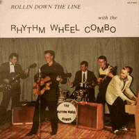

the Rhythm Wheel Combo - Rollin Down The Line (Album, 1984)
01 - Ruth Started Rockin (2:22)
02 - Where The Rio De Rosa Flows (2:30)
03 - Am I Blue (2:11)
04 - I Need You So (2:41)
05 - End Of The Road (1:53)
06 - All Nite Long (1:45)
07 - Down The Line (2:17)
08 - I'm Gonna Sit Right Down And Cry Over You (1:55)
09 - Rhythm Wheel Blues (2:40)
10 - Sittin' On The Top Of The World (1:58)
11 - In My Dreams (2:42)
12 - Is It Ever Gonna Happen (2:02)
© Spinning Record Company :: [SRLP-8423]
Notes
Finland.
Tomi Tiainen - Vocals, Guitar
Matti Saloranta - Bass, Vocals
Eino Rastas - Lead Guitar
Mitja Tuurala - Piano, Vocals
Rudy Antero Ryynänen - Drums
Recorded on Sound studio by T. Järvinen and T. Kasslin
Produced by RWC
reference information: Discogs®
Review
297/366 (Project 366)
Authentic Rock'n'Roll from Finland. Great quality, rhythm sound, country and folk touches, very danceable and smooth.